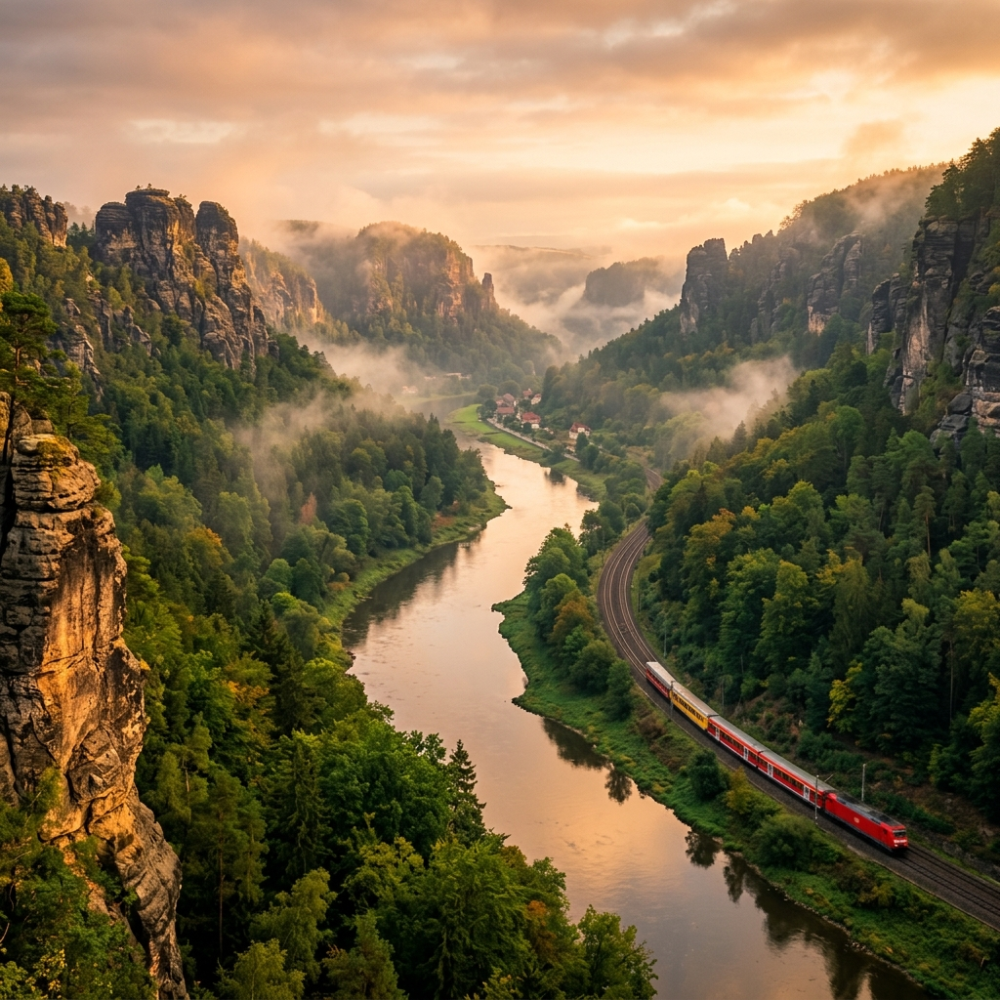
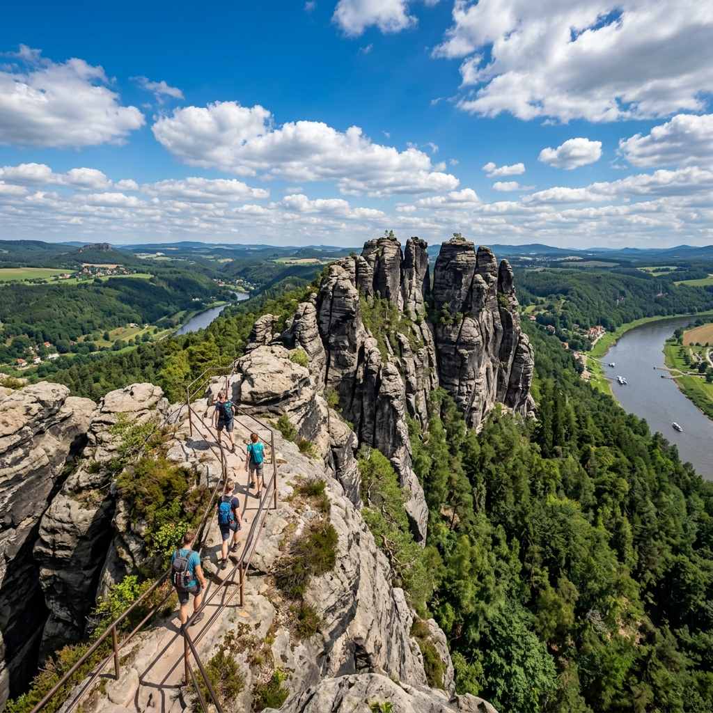

Výlet č. 1
Náročná
🏔️ Saské Švýcarsko – Schmilka
Ze Schmilky přes skalní labyrint – Gespaltener Kegel, legendární Schrammsteine a zpět Wilder Grundem k Labi.
12.8 kmDélka
~500 mPřevýšení
556 mMax. výška
4:49 hČas
🗺️ Trasa:
Schmilka → Gespaltener Kegel → Sandloch → Schrammsteine → Wilder Grund → Schmilka
🗺️ Animace trasy
✨ Hlavní atrakce
- 🪨 Schrammsteine – legendární skalní labyrint
- 🗼 Wilder-Grund-Turm – výhledová věž
- ⛰️ Gespaltener Kegel – rozštěpená skalní jehla
- 🌊 Koryto Labe – divoká říční krajina
🎟️ Poplatky:
Vstup do národního parku je zdarma. Platí se případně parkovné ve Schmilce nebo lístek na přívoz.
Načítám počasí na další dny...